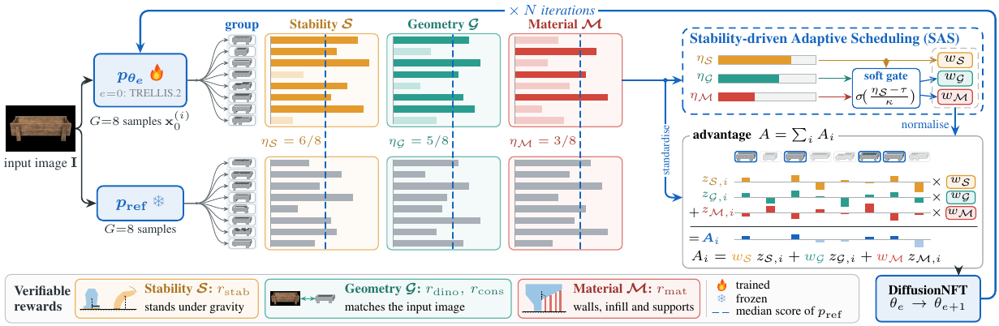
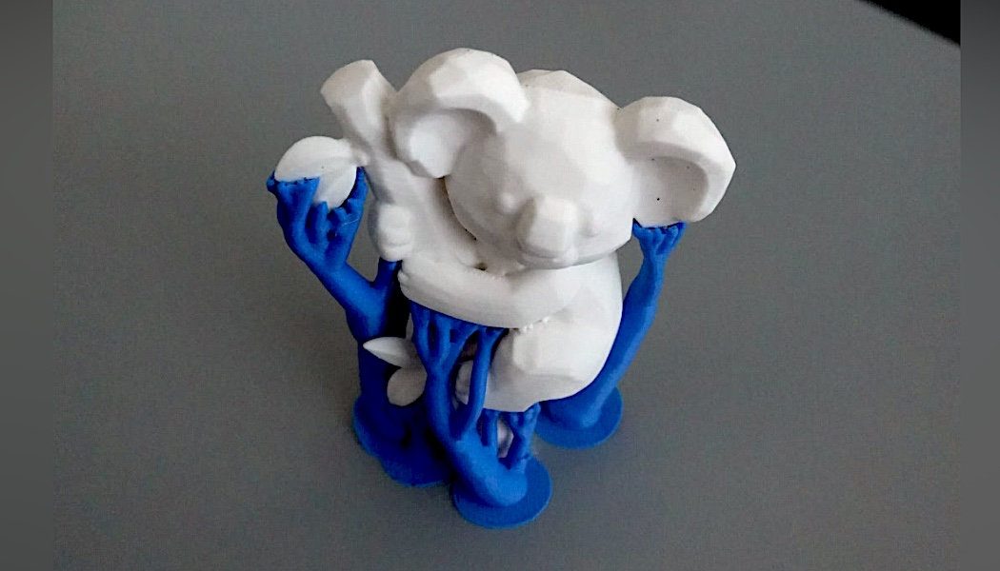
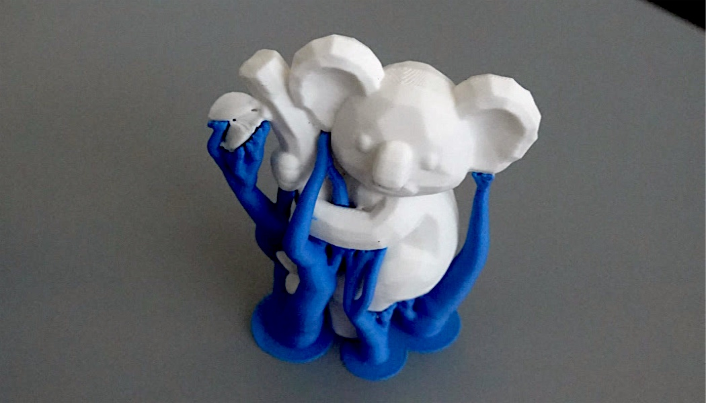

Koala

Baseline and PhysRL3D-SAS generated from the same input image.
TRELLIS.2PhysRL3D-SAS
Red: TRELLIS.2. Blue: PhysRL3D-SAS. The clips loop continuously.
Under review
Image-to-3D generators improve visual fidelity, yet outputs may topple when placed upright or require substantial support material while printing. Jointly optimizing stability and print-material use remains challenging. Stability feedback often relies on physics simulation, while geometry-based objectives overlook the material cost of infill and overhang supports. We present PhysRL3D, a reinforcement learning framework that post-trains an image-to-3D generator for stable, material-efficient fabrication. From voxel occupancy, PhysRL3D computes a center-of-mass margin for standability and a slicer-inspired material reward that accounts for infill, overhang supports, and savings from reshaping geometry to reduce support. Two image-space rewards preserve fidelity to the input. To balance stability and material use, we introduce Stability-driven Adaptive Scheduling (SAS) for reweighing the objectives. SAS tracks each objective's progress relative to a frozen base model and prioritizes stability initially. Stability progress is then used as the primary signal for adapting the geometry and material reward weights. Training requires neither 3D ground-truth nor human labels, and adds no inference-time cost. On HY3D-Bench, ours raises the standable rate from 84.8% to 98.2%, reduces print-material use by 14.4%, and lowers Chamfer distance by 16.6%. Selected physical prints show improved standability, reduced print mass, and preserved geometric fidelity.

Drag the divider to inspect the same generated object from every view. Both clips in each comparison are 360° turntable renders from the corresponding verified output mesh, using a shared camera, duration, and rotation rate.
Baseline and PhysRL3D-SAS generated from the same input image.
Red: TRELLIS.2. Blue: PhysRL3D-SAS. The clips loop continuously.

Baseline and PhysRL3D-SAS generated from the same input image.
Red: TRELLIS.2. Blue: PhysRL3D-SAS. The clips loop continuously.
Inspect the same verified outputs directly: drag to orbit, use the scroll wheel or pinch gesture to zoom, and reset the view at any time. Choose either method to load its compact display mesh.
Drag to rotate · scroll or pinch to zoom · the selected mesh is shown in full 3D.
Drag to rotate · scroll or pinch to zoom · the selected mesh is shown in full 3D.
The airplane mesh was not retained with the review assets, so it is shown only through its measured before/after simulation states rather than a reconstructed rotation.
 input image
input image TRELLIS.2: release
TRELLIS.2: release TRELLIS.2: tipped over
TRELLIS.2: tipped overOnly the turntables above use archived 3D meshes. The airplane panels show the measured before/after states of the same generated object; the videos below are separate, cropped real-print demonstrations.
Each pair is TRELLIS.2 and PhysRL3D-SAS generated from the same input image, scaled to 100 mm and printed together on one plate.
Bambu Lab H2D, PLA, the slicer's default tree supports and 15% infill; white = object, blue = support. Weights are read from a kitchen scale with 1 g resolution, with the supports attached and after removing them.


Both prints need about the same support (2 g each). Without supports, the TRELLIS.2 kangaroo stands on two narrow hind feet and falls over; the PhysRL3D-SAS kangaroo stands on broad feet. The PhysRL3D-SAS print is heavier (15 g against 11 g).
TRELLIS.2
 with supportssupports removed
with supportssupports removedPhysRL3D-SAS
 with supportssupports removed
with supportssupports removed
Both koalas weigh 22 g with their supports and both stand once the supports are removed. The PhysRL3D-SAS body weighs 17 g against 19 g for TRELLIS.2, but its supports weigh 5 g against 3 g.
TRELLIS.2

with supportssupports removedPhysRL3D-SAS

with supportssupports removed
The TRELLIS.2 airplane tips over in rigid-body simulation, so it was not printed; its frames show the simulation at release and after release. The PhysRL3D-SAS airplane prints with 2 g of supports (6 g object) and rests flat once they are removed.
TRELLIS.2
simulation, at releasesimulation, after releasePhysRL3D-SAS
with supportssupports removed| Print (100 mm) | With supports | Without supports | Supports | After removal |
|---|---|---|---|---|
| Kangaroo, TRELLIS.2 | 13 g | 11 g | 2 g (15%) | falls over |
| Kangaroo, PhysRL3D-SAS | 17 g | 15 g | 2 g (12%) | stands |
| Koala, TRELLIS.2 | 22 g | 19 g | 3 g (14%) | stands |
| Koala, PhysRL3D-SAS | 22 g | 17 g | 5 g (23%) | stands |
| Airplane, TRELLIS.2 | not printable (tips over in simulation) | – | ||
| Airplane, PhysRL3D-SAS | 8 g | 6 g | 2 g (25%) | rests flat |
@inproceedings{physrl3d,
title = {PhysRL3D: Simulator-Free Post-Training for Material-Efficient and Stable Image-to-3D Generation},
author = {Anonymous},
note = {Under review}
}